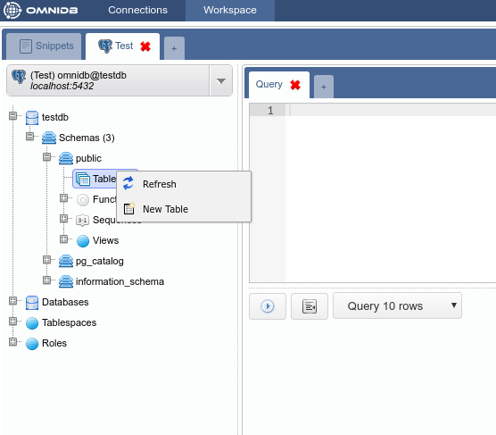
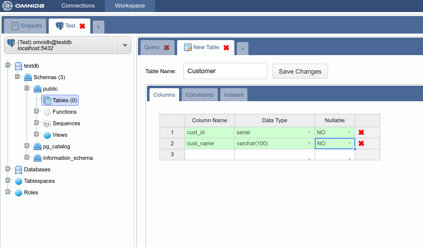
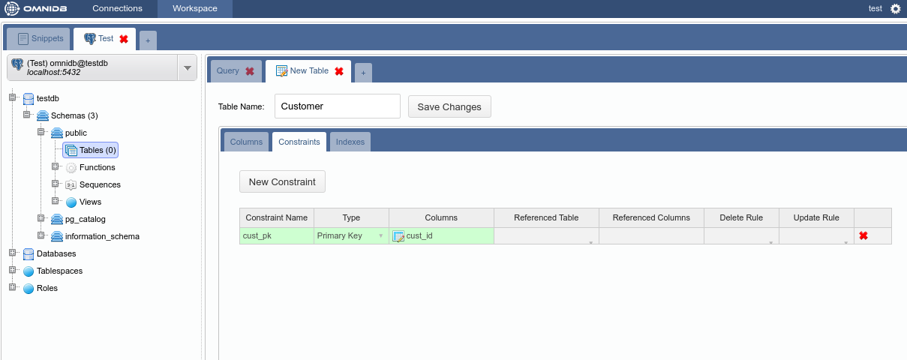
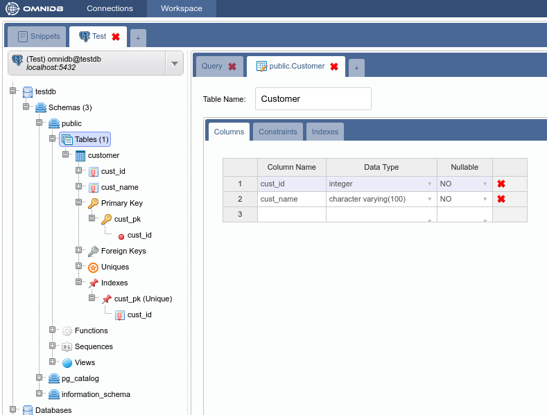
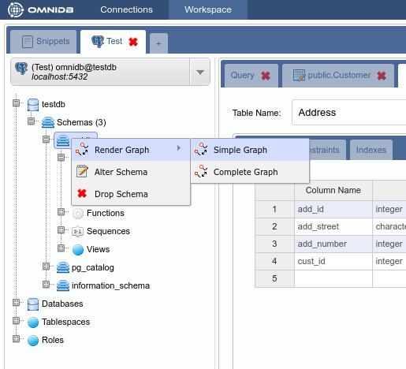
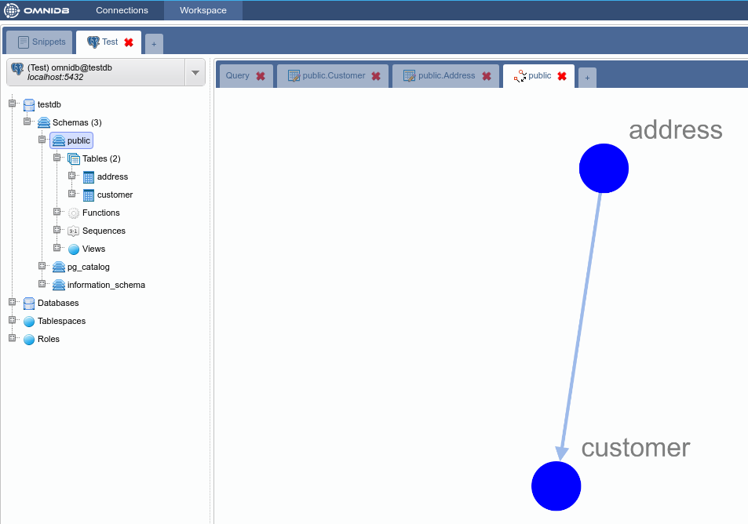
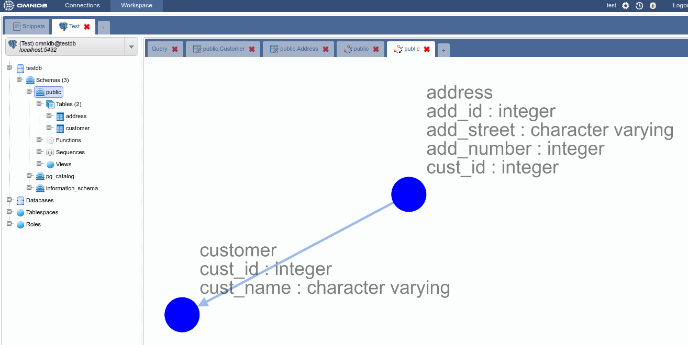
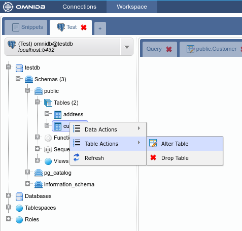
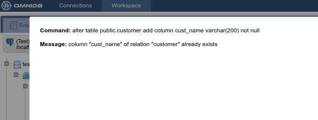

OmniDB possui uma interface de criação de tabelas que permite configurar colunas, restrições (constraints) e índices. Algumas observações devem ser mencionadas: - A maioria dos SGBDs cria automaticamente índices quando as chaves primárias e exclusivas são criadas. Por isso, a guia de índices só está disponível depois de criar a tabela. - Cada SGBD tem suas características e limitações únicas na criação de tabelas e a interface OmniDB reflete essas limitações. Por exemplo, o SQLite não nos permite alterar as colunas existentes e restrições (constraints). Por isso, a interface nos permite mudar apenas o nome da tabela e adicionar novas colunas ao lidar com bancos de dados SQLite (este ainda não é o caso da versão OmniDB Python, pois atualmente suporta apenas banco de dados PostgreSQL).
Vamos criar tabelas de exemplo (Customer e Address) no banco de dados testdb que conectamos anteriormente. Clique com o botão direito do mouse no nó Tables e selecione New Table:

Vamos criar a tabela Customer com uma chave primária que será referenciada pela Tabela Address:


Observe como a tabela aparece no nó Tables da árvore:

Agora, crie a tabela Address com uma chave primária e uma chave estrangeira.

Neste ponto, temos duas tabelas no schema public. A estrutura do schema pode ser vista com o recurso de gráfico clicando com o botão direito no schema public da árvore e selecionando Render Graph > Simple Graph: At this point we have two tables in schema public. The schema structure can be seen with the graph feature by right clicking on the schema public node of the tree and selecting Render Graph > Simple Graph:


E é assim que o Complete Graph exibe:

O OmniDB também permite que você edite tabelas existentes (sempre seguindo as limitações do SGBD). Para testar este recurso, adicionaremos uma nova coluna à tabela Customer. Para acessar a interface alter table apenas clique com o botão direito do mouse no nó da tabela e selecione Table Actions > Alter Table:

Adicione a coluna cust_age e salve:

A interface é capaz de detectar erros que podem ocorrer durante as operações Alter Table, mostrando o comando e o erro que ocorreu. Para demonstrar tentaremos adicionar a coluna cust_name, que já pertence a esta tabela:

Para remover uma tabela, clique com o botão direito do mouse no nó da tabela e selecione Table Actions > Drop Table: